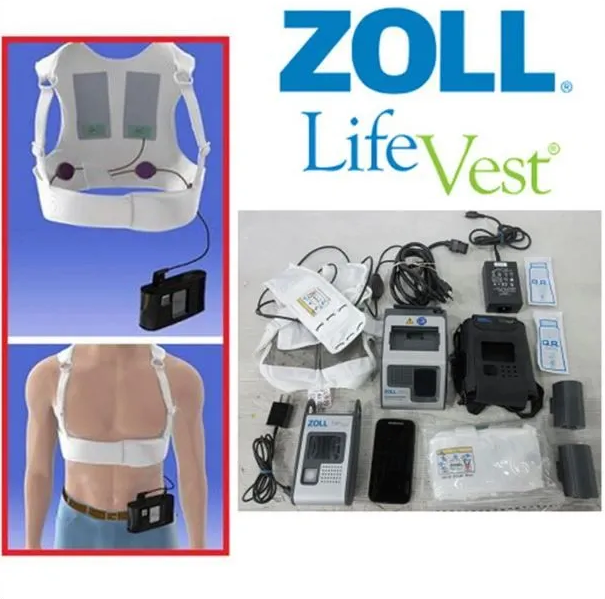
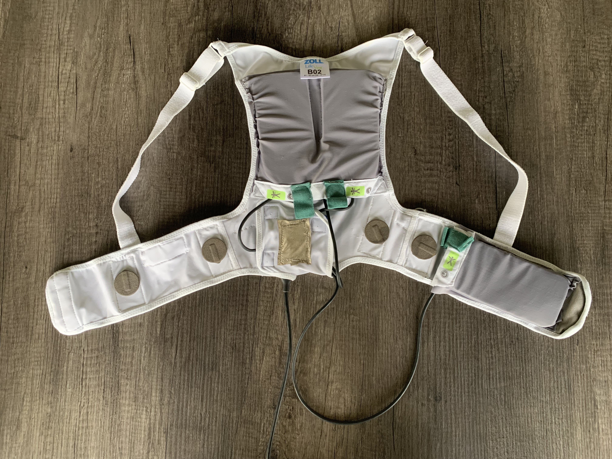
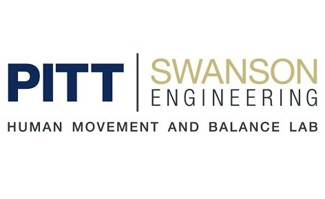
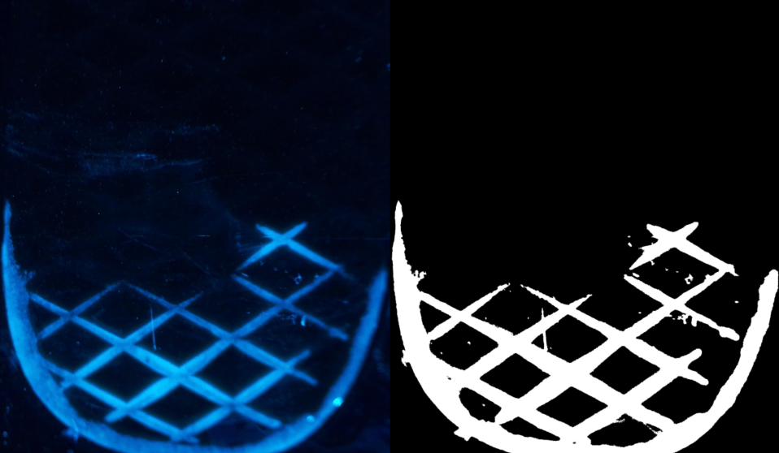
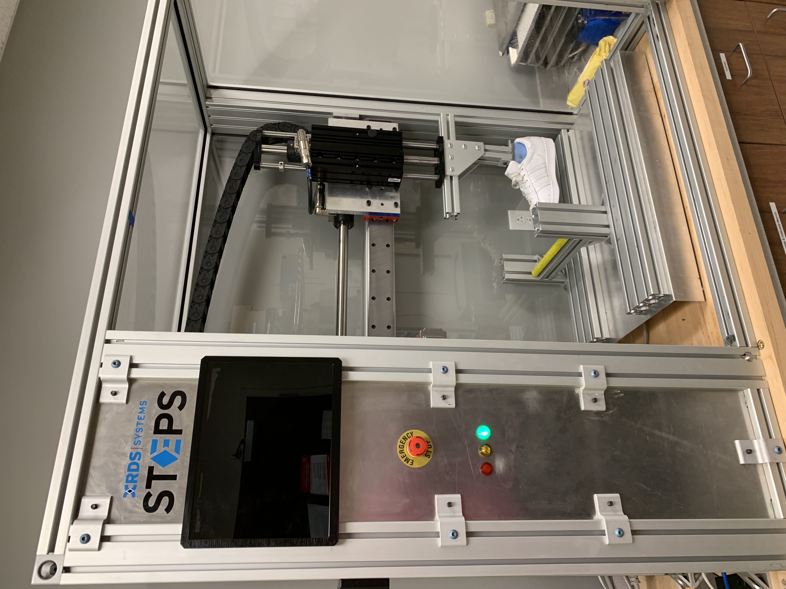
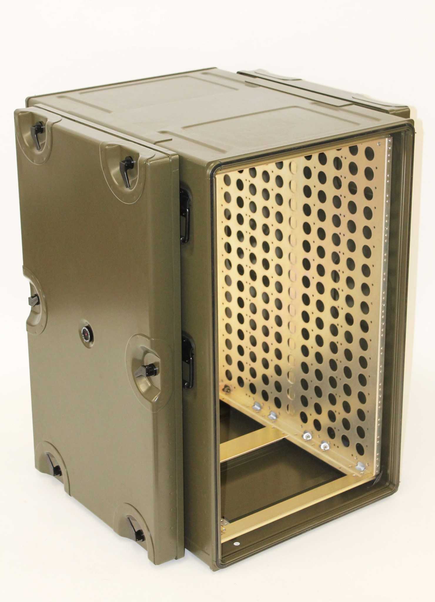

If you don't know where to start, I would like to highlight a pending patent that I am co-inventor on. More on this is found under "ZOLL LifeVest". Other notable projects can be found under "Human Movement and Balance Laboratory".
Wood
I am currently employed as a Vibration Field Analyst at Wood Group, a company specializing in technical consulting for the oil and gas industry across assets ranging from midstream pumping stations to large scale LNG terminals and refineries. My role focuses on diagnosing critical vibration issues in compressors, pumps, and piping systems to mitigate the risk of mechanical failure.
Key Responsibilities:
- Collaborate directly with site stakeholders to investigate any previous failures and define the scope of the vibration issues.
- Execute on site assessments including baseline test plan, data collection, and advanced mechanical natural frequency (MNF) and operating deflection shape (ODS) testing.
- Utilize FFT datasets and advanced signal processing to isolate problematic frequency ranges in the system and document findings in technical reports.
- Design and present engineered solutions to shift resonance frequencies outside of excitation ranges, ensuring long term structural integrity.
Individual Contribution:
- Crisis Management: Developed a reputation as a decisive problem solver in high pressure, time sensitive environments.
- Business Development: Cultivated client relationships directly leading to follow up contracts and expanded service scopes.
- Root Cause Investigation: Leveraged data analysis techniques to identify connections within the system, leading to a broader understanding of the issue, and identifying the root cause of the problem.
ZOLL LifeVest

I completed three four-month co-op rotations with the Human Factors Engineering team at ZOLL, followed by a summer internship with the Advanced Research/Advanced Development (AR/AD) group. Throughout my time with the Human Factors team, I focused on user-centric design, ensuring that user needs drove decision-making at every development stage. By interviewing end-users and translating those insights for cross-functional teams, I facilitated design changes that improved the comfort and usability of the LifeVest system. I later applied this expertise in the AR/AD group by implementing 3D scanning technology to measure participants for enhanced garment fit accuracy and to optimize electrode placement on the participants during use.
Conductively Coated Fabric Electrode - Patent Pending (Patent App. No. 63/830,428) | Co-Inventor

During my time on the AR/AD team, I spearheaded the redesign of traditional ECG electrodes, transitioning from rigid metal plates to flexible, fabric based sensors. This innovation aims to improve long term patient compliance by enhancing comfort during daily activities without compromising signal quality.
- Integrated fabric electrodes into existing hardware, including PCB connections and the technical sewing of conductive fabric directly into the patient garment.
- Achieved signal quality comparable to traditional electrodes while significantly increasing user comfort during daily wear, sleep, and moderate exercise, as validated by an initial participant test group.
Individual Contribution:
- Fabricated functional prototypes by 3D printing custom PCB enclosures, performing precision soldering, and sewing test garments to evaluate form and fit.
- Led material selection by quantifying signal distortion and loss across various conductive fabrics, including performance testing over multiple wash cycles.
- Identified performance trends of conductive electrodes by analyzing the relationship between stitch patterns, conductive materials, and interwoven nonconductive fibers.
Human Movement and Balance Laboratory (HMBL)

I worked at the Human Movement and Balance Laboratory (HMBL) beginning my sophomore year until I graduated in the spring of 2026, committing 10 hours per week alongside a full engineering course load. This required excellent time management skills and provided extensive hands on experience in biomechanical research and experimental design.
Working within a team of Ph.D. candidates and fellow undergraduate researchers, I transitioned from a supporting role to a leadership position. During my final year, I was responsible for the training of junior lab members to ensure a seamless transition of ongoing projects after my graduation.
FTIR Scanner

HMBL developed a portable scanner utilizing frustrated total internal reflection (FTIR) technology to quantify the contact area between a shoe sole and the ground.
- The system captures an image upon user interaction, autonomously identifying and measuring the contact patches. It calculates the largest continuous area of contact, providing a critical metric for slip resistance.
- The size of the contact area serves as a primary indicator of slip probability, particularly when liquid is present.
- A secondary objective involved correlating the intensity of the reflected light to the normal force exerted, allowing for deeper analysis of pressure distribution.
Individual Contribution:
- Incorporated a Raspberry Pi and camera to manage image capture and system control.
- Developed MATLAB code to dewarp raw images, generate binary masks of footwear contact points, and execute measurements of the primary contact region.
- Authored Python scripts to extract luminosity data from contact regions, establishing a correlation between pixel intensity and applied force.
Coefficient of Friction Testing on Ladder Rungs

As part of a comprehensive biomechanics study on ladder ascent and descent safety, I led the friction testing phase to evaluate slip risk factors across various hardware configurations.
- Friction testing was conducted on a variety of rung geometries under both dry (baseline) and contaminated (oil) conditions to simulate real world hazards.
- Existing tribology equipment was reengineered to accommodate the unique testing needs of this study.
Individual Contribution:
- Developed and validated a robust testing SOP that ensured reliability and data integrity across multiple researchers, minimizing human induced variables.
- Designed and machined custom test fixtures to interface ladder rungs and footwear samples with the testing apparatus.
- Performed data analysis to quantify the impact of rung geometry, surface pattern, and material composition on the measured coefficient of friction.
Desapro

During the summer following my sophomore year, I interned at Desapro, a company specializing in the design and manufacturing of custom aluminum transit cases. These containers protect high-value, sensitive equipment such as missile systems, advanced sensors, and optical arrays during transport, often in rigorous military environments.
Key Responsibilities:
- Modeled custom aluminum containers in SolidWorks and generated comprehensive, production ready engineering drawings.
- Collaborated directly with the manufacturing team to optimize designs, reducing production lead times and simplifying assembly processes.
- Communicated directly with clients, managing project requirements from initial concept through to final design approval.
Technical Takeaways:
- Developed high level proficiency in SolidWorks, specifically managing complex assemblies and top down design methodologies.
- Gained exposure to quality testing, CNC machining, specialized welding techniques, and precision sheet metal fabrication (bending and stamping).
- Learned to balance theoretical design with shop floor reality, ensuring models were compatible with specific tooling capabilities and material tolerances.